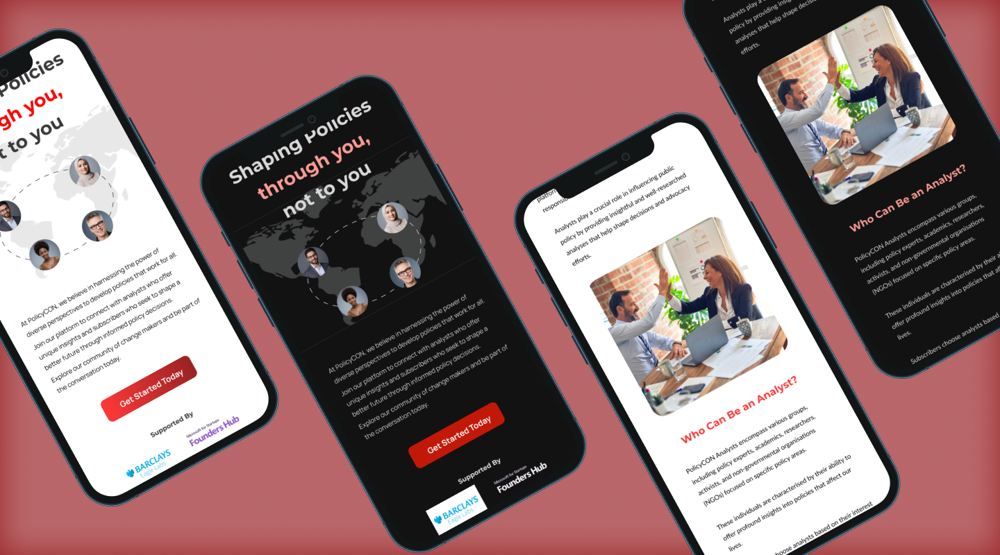
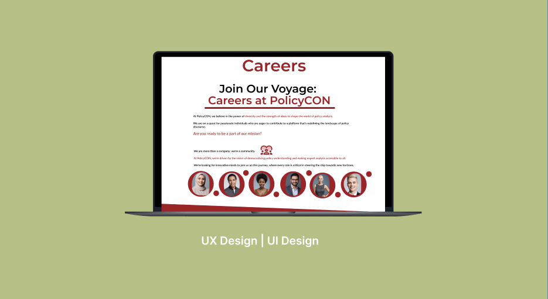
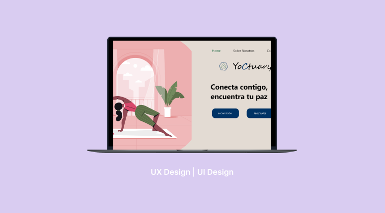
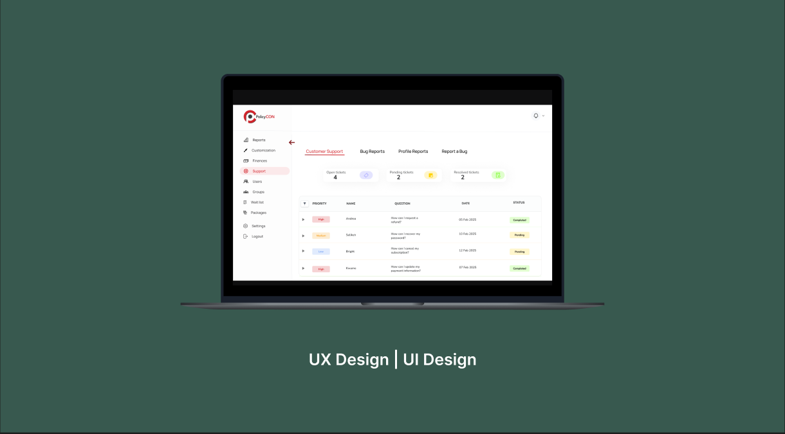
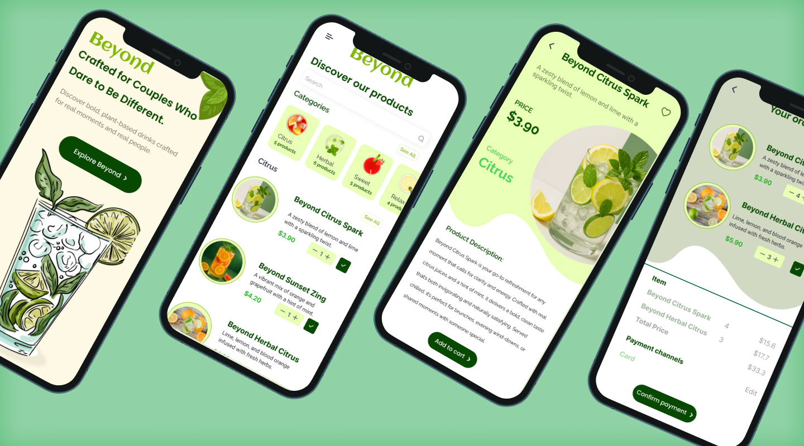

Home
Works

End-to-end feature design
PolicyCON Dark Mode
View case study →

End-to-end feature design
Careers Page Redesign
View case study →

End-to-end feature design
UX/UI for a Custom Wellness App
View case study →

End-to-end feature redesign
Improving UX in Support & Reporting
View case study →

End-to-end feature redesign
Beyond App
View case study →